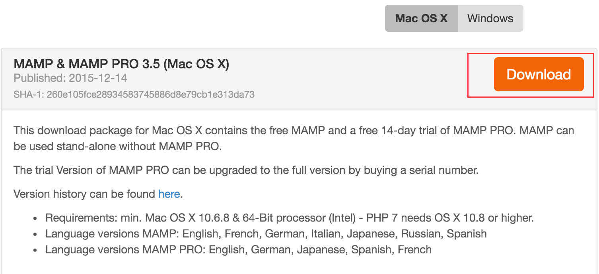
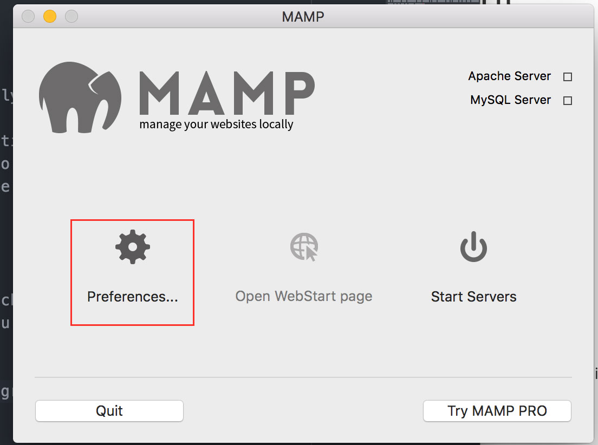
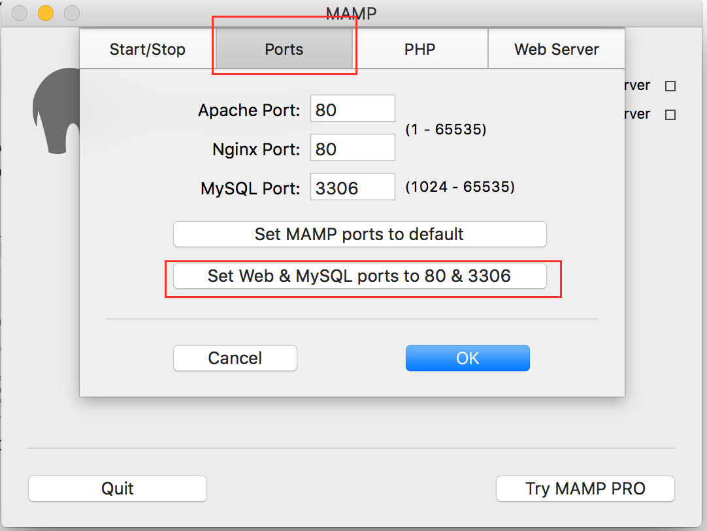
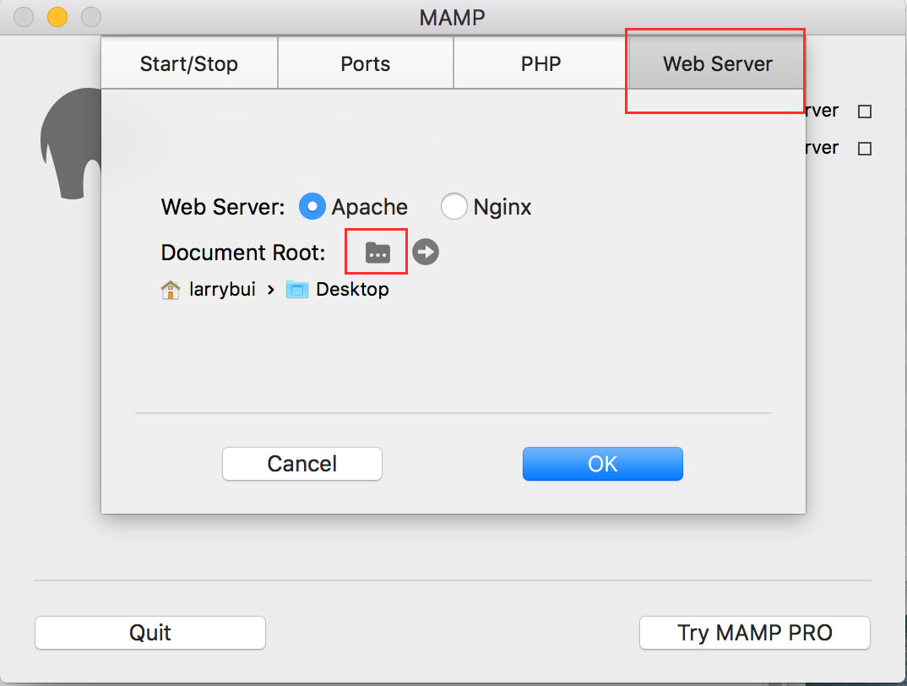
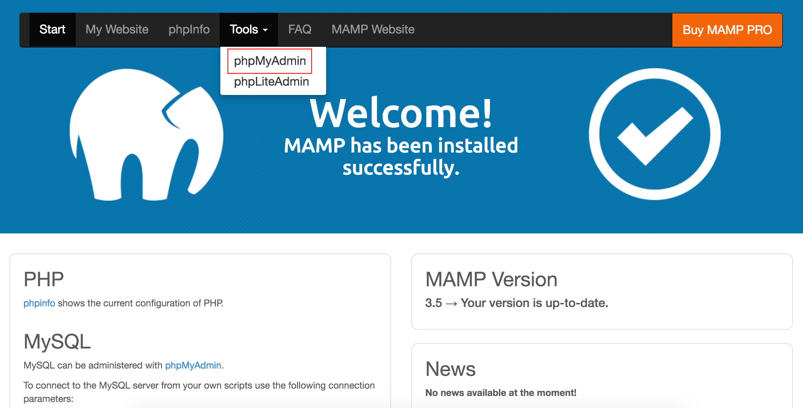
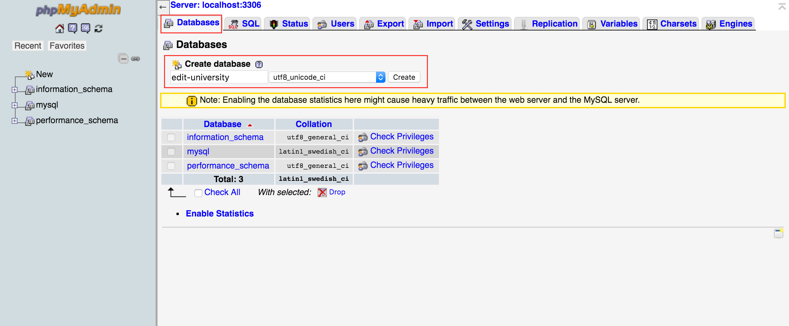
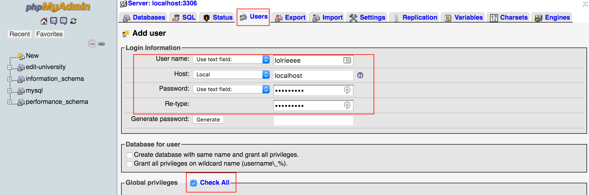
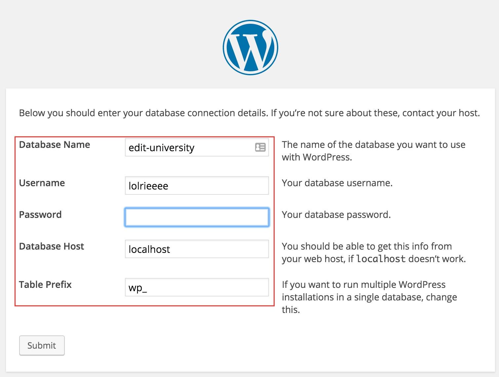
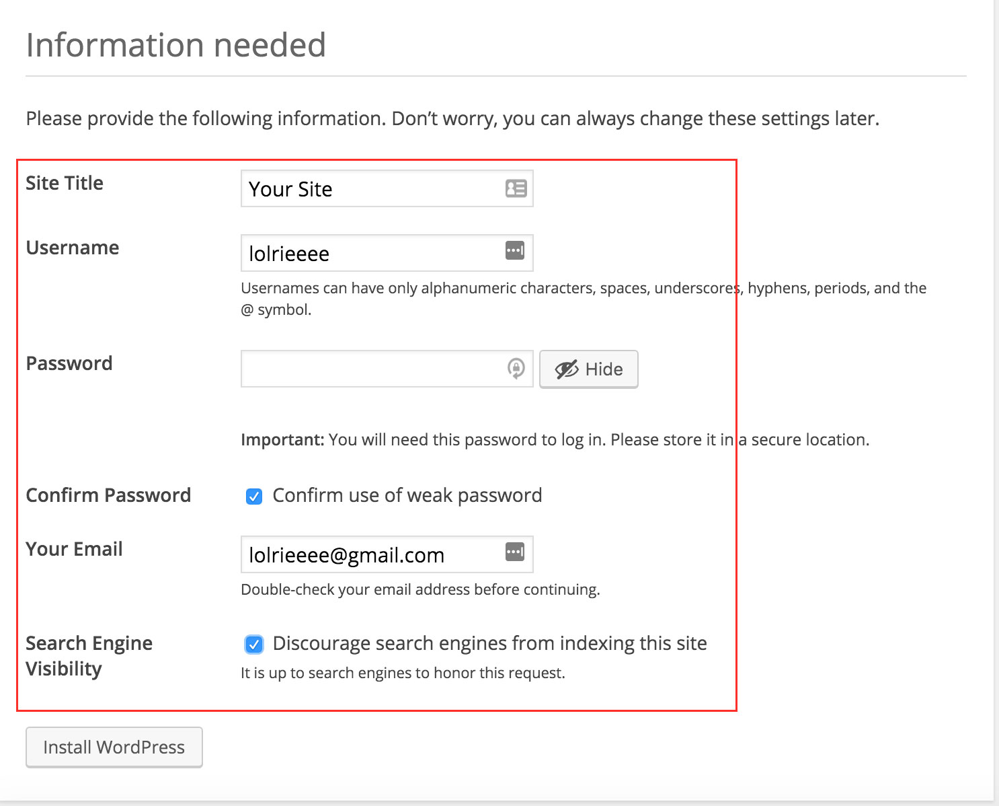

The first step in our process will be setting up a local server using MAMP. Go to this link and download the Mac OS X version (the download will bundle a free version and a trial of the pro version which is ok and we won't use).
Once the download is finished, run the package. Click through the installer steps and it should begin installing and notify you when it has fully installed.
Start up the MAMP application and the program should start. The first thing we will do is change the preferences. Click on the Ports tab and set the web and MySQL ports to 80 and 3306. Then click on the Web Server tab and select our root directory. This is where your wordpress folder and its files will reside. For our purposes I will choose the desktop as my root directory.
Once we have those settings, we can start the server and a web page should pop up. Now we will set up our database and user account. navigate the menu to tools > phpMyAdmin.
A new page will pop up and once the page is loaded click on the Databases tab. There we will create a new database and select the language it will take in. Click create and you will be taken to a new page. This is all we need from this tab, click New on the left sidebar to return to the top page.
Next we will create our user account. Click on the Users tab at the top of the page. The user overview page will appear and click add new under the new section. Create a user name of your choice and set host to local. Create your password and in global privileges, check all because this is for you and you want superpowers right? But wait, you won't havethese until you scroll down to the bottom when done and click go. Remember your database name and username for the future steps.
Now that we have set up MAMP, we will now install wordpress locally. Go to this link and download the wordpress package. Once the download is done, we will unzip it to where we chose our root directory to be earlier. In our case it would be the desktop. Make sure your server is still running on MAMP and we are ready to setup our Wordpress account!
To access our wordpress locally. open a browser and enter in the address localhost/wordpress/wp-admin/. This will take you to a setup page where it will take you through multiple pages on initial setup. Fill out the information on the database from when you created earlier. Then create your wordpress account and site log-in and information. You should be able to log-in after that and ready to go!
 